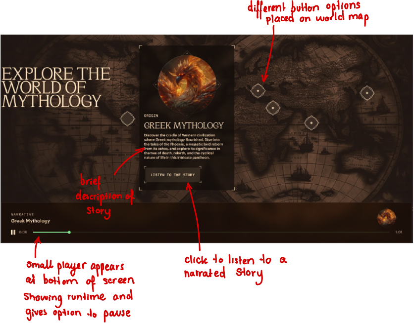
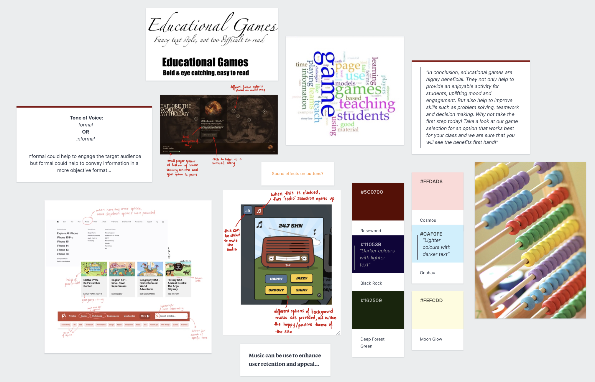

What is the audio used for: sound effects, ambient sound, background music, speech?
Audio is used for background music. There is also a small bit of speech and a sound effect when you initially open the site.
Can you find evidence of audio used with intent, which enhances information comprehension, retention and appeal?
The audio doesn’t really enhance information comprehension, but it definitely enhances retention and appeal. It works well with the happy ‘sunny’ design of the website. This makes it more engaging when scrolling through the site as it adds to the atmosphere that the design creates.
What advantages and caveats of audio use can you witness?
The advantage is that without the music the website is less interesting, but with the music it becomes more of an experience.
How is audio combined with other media (images, text, video) in order to enhance a multimedia production?
There are a lot of moving characters as you scroll down the website. The music works well with this as it is very positive and upbeat much like the smiling cartoon characters on the page.
What is the audio used for: sound effects, ambient sound, background music, speech?
This site contains ambient sound, sound effects and also speech.
Can you find evidence of audio used with intent, which enhances information comprehension, retention and appeal?
The speech helps to enhance information comprehension. These tell stories about different mythological creatures. The ambient sound also helps with appeal as the website is based on mythical creatures, so this helps to immerse users in the feel of mythical world. This is the same kind of immersion that you might feel in when watching a film.
What advantages and caveats of audio use can you witness?
I think the speech is an advantage because it would be a large amount of text for users to read if it wasn’t spoken. The speech also helps to engage people better as it is read out in a narrator’s voice.
How is audio combined with other media (images, text, video) in order to enhance a multimedia production?
The speech is combines with the interactivity of the world map. There is also a sound effect every time you move your mouse over a button on the site.

Moodboard:

Labwork
Task 1/2
Master-file for button sound effect:
Button1 - medium - mono:
Button1 - medium - stereo:
Button1 - standard - stereo:
Out of the different qualities, I prefer stereo to mono audio. I think the mono has a more agressive sound and isn't as nice to listen to as the stereo
versions of the audio.
For this sound effect, I don't think the difference in medium and standard quality make much of a difference. This means I would be able to use the
medium export as this has a smaller file size.
The quality might make a difference for more complex audio files, but this file is quite simple. I would need to experiment with different audio files
to see how much difference the quality makes.
On reflection, I don't really like this audio file. I had considered it for a button sound but it feels quite unnecessary and while I think a button sound
would be a good cue for a user to know when they've clicked a button, I would prefer to use a quieter sound with a more gentle feel.